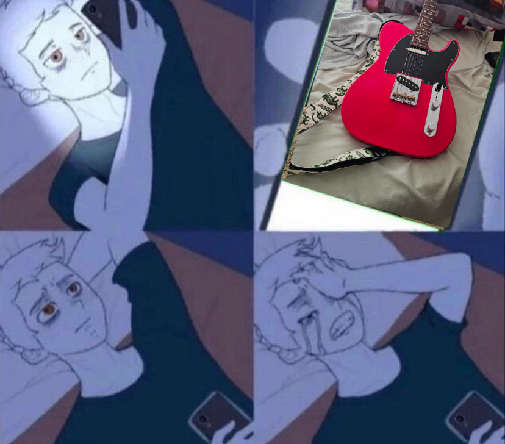
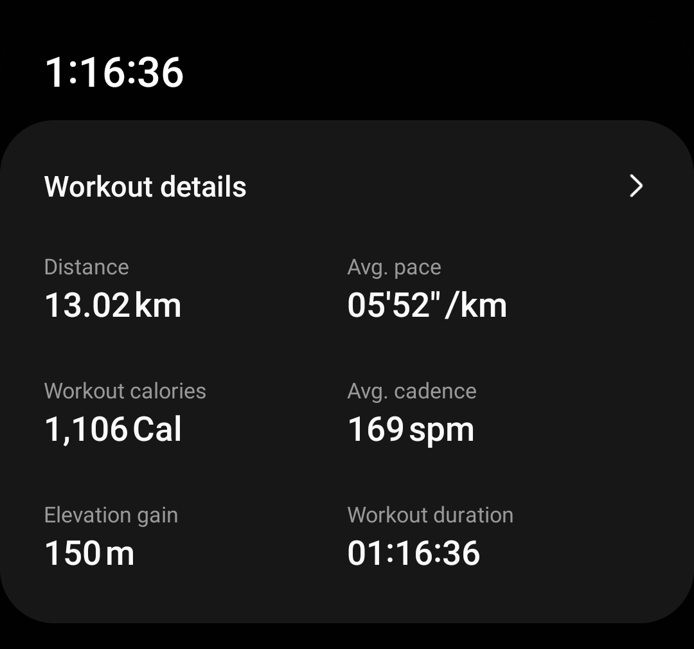
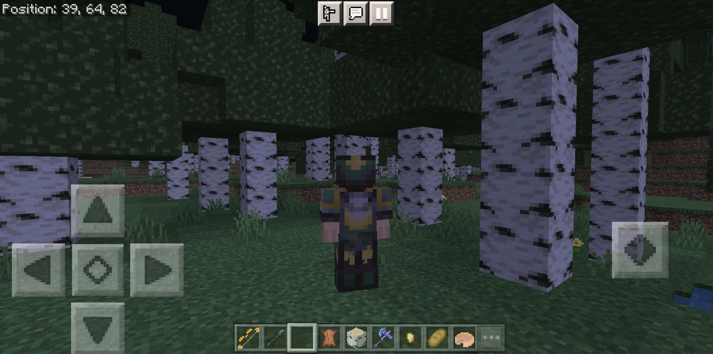

Guitar
This is my bestfriend's guitar that I borrowed while I'm in Japan, but she's moved away so I had to give it back :(

Working out
I like to workout and run. This run I did was in Japan.

Minecraft
Minecraft is the reason I have gone to university to study computer science. I mostly play bedrock, and I make mods on my phone. Minecraft is hands-down the best game in the universe.
